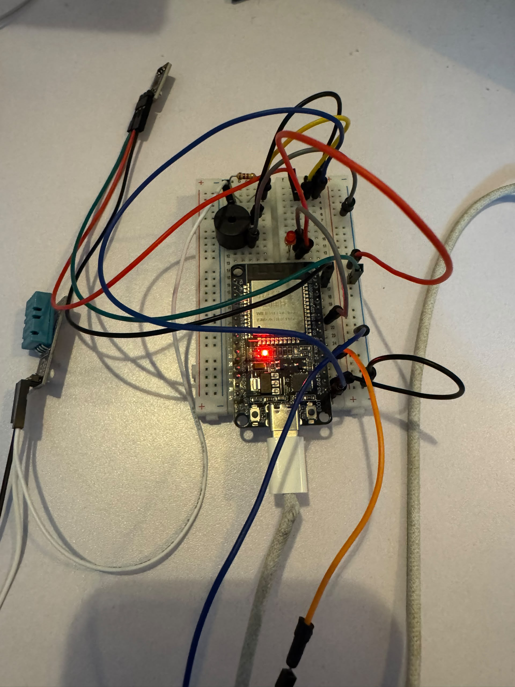

Hardware
Parts, pins and wiring.
| Part | ESP32 pin | Wiring |
|---|---|---|
| DHT11 module | GPIO4 (D4) | + to 3V3, - to GND, OUT to D4. A bare sensor needs a 10 k pull-up on data. |
| MQ-135 module | GPIO23 (D23) | VCC to 3V3, GND to GND, DO to D23. The trimmer pot sets the trip level. |
| Alarm LED | GPIO19 (D19) | D19 to 330 ohm to LED anode, cathode to GND. On only while air quality is POOR. |
| Buzzer (optional) | GPIO18 (D18) | D18 to 1 k to NPN base, buzzer between 3V3 and collector, emitter to GND. |
| BOOT button | GPIO0 | On the board, active low. |
All parts sit on the right-hand header row of the dev board. The MQ-135 digital output is used, so no ADC pin is needed and the Wi-Fi radio cannot disturb the reading.
The MQ-135 heater draws a noticeable current. A weak USB cable or port can make the ESP32 brown out when
Wi-Fi starts. Use a short data cable in a direct port, and add the sensors one at a time.


Check each module's own pin labels, because they are not always in the same order. A swapped data and ground wire on the DHT11 shows up in the log as "data line is stuck LOW".